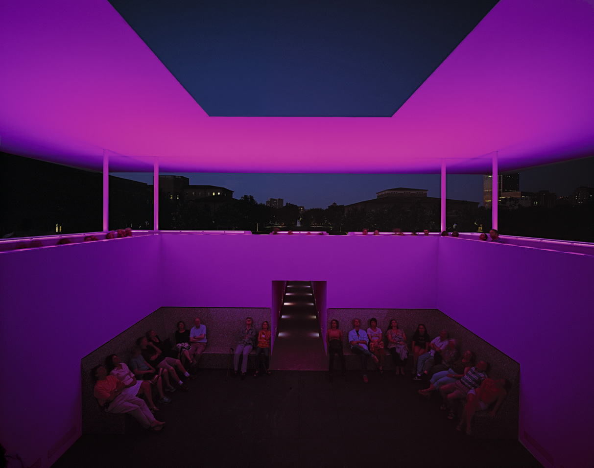
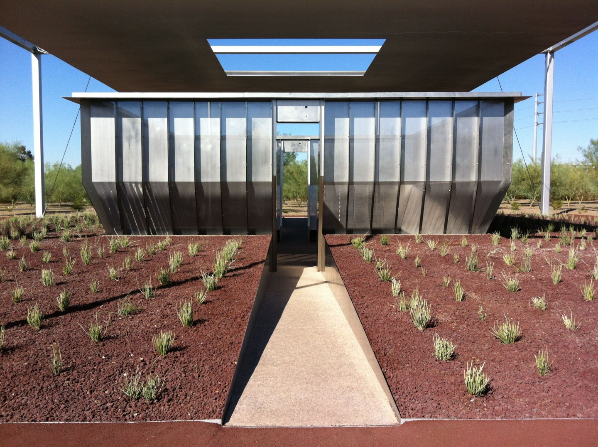

For over half a century, the American artist James Turrell has worked directly with light and space to create artworks that engage viewers with the limits and wonder of human perception. Turrell, an avid pilot who has logged over twelve thousand hours flying, considers the sky as his studio, material and canvas. New Yorker critic Calvin Tompkins writes, “His work is not about light, or a record of light; it is light — the physical presence of light made manifest in sensory form.”
Informed by his training in perceptual psychology and a childhood fascination with light, Turrell began experimenting with light as a medium in southern California in the mid-1960’s. The Pasadena Art Museum mounted a one-man show of his Projection Pieces, created with high-intensity projectors and precisely modified spaces, in 1967. Mendota Stoppages, a series of light works created and exhibited in his Santa Monica studio, paired Projection Pieces with structural cuts in the building, creating apertures open to the light outside. These investigations aligning and mixing interior and exterior, formed the groundwork for the open sky spaces found in his later Skyspace, Tunnel and Crater artworks.
